| 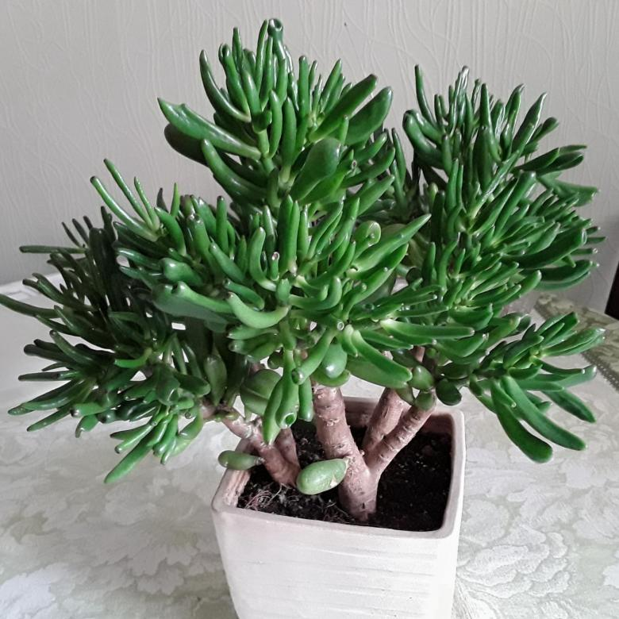 | Суккулентное растение Крассула (Crassula), еще именуемое Толстянкой, является частью семейства Толстянковые. По информации, взятой из различных источников, данный род объединяет от 300 до 500 различных видов. Больше 200 видов встречается на территории Южной Африки, еще большое количество видов можно повстречать на Мадагаскаре и в тропической Африке. Часть видов можно встретить в южной части Аравийского полуострова, такое растение широко распространено в основном в Южном полушарии. Его название образовано от слова «crassus», которое переводится как «толстый», это связано с тем, что у большинства видов листва обладает мясистой структурой. В домашних условиях наиболее часто выращивают вид крассула портулаковая, его еще именуют «дерево счастья», либо «денежное дерево». Однако в комнатных условиях выращивают и множество иных видов крассулы. |
| 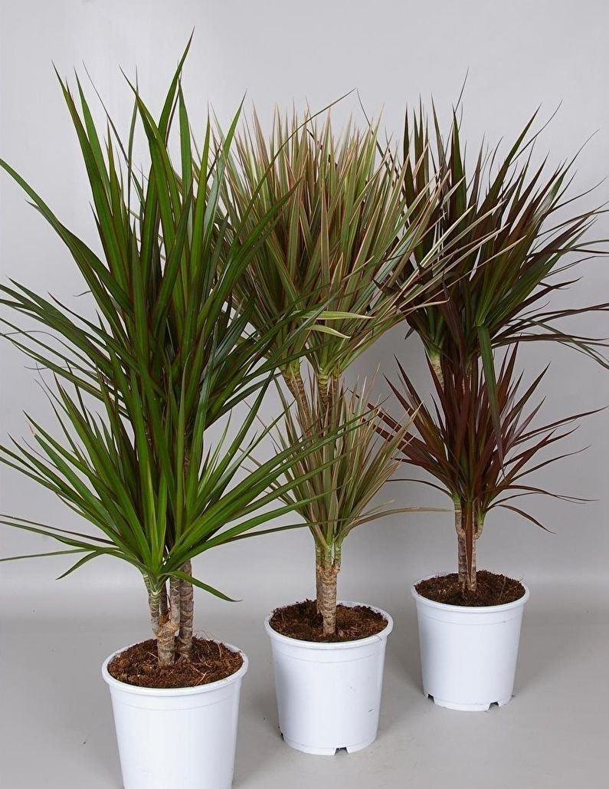 | Драцена (Dracaena) является частью семейства Спаржевые. Это растение представлено суккулентными кустарниками и деревьями. Наиболее широко оно распространено в Африке, часть видов можно повстречать в Южной Азии, а еще 1 вид произрастает в тропической части Центральной Америки. Причем именно в Центральной Америке существует древняя ацтекская легенда о молодом воине, который влюбился в дождь вождя. При этом грозный отец красавицы на просьбу воина отдать дочь в жены сказал: возьми палку, воткни в почву, поливай ее и не позже чем через 5 суток на ней должна вырасти листва. И чудо случилось, именно на пятые сутки на палке появилась листва, и она превратилась в красивое дерево ― драцену. В результате воин взял в жены дочку вождя, при этом драцену в народе стали называть «деревом счастья». О появлении драцены существует целая легенда, в которой говорится о том, что молодой парень для того чтобы получить руку своей возлюбленной, должен быть взять сухую палку и сделать так, чтобы на ней появились листья. Если вы решите украсить свой дом драценой, которую еще именуют «драконовым деревом», то вам как в этой легенде придется потратить немало сил и времени на то, чтобы куст вырос пышным и эффектным. Однако пугаться не стоит, потому что достаточно знать несколько правил и секретов, чтобы у вас все получилось. |
| 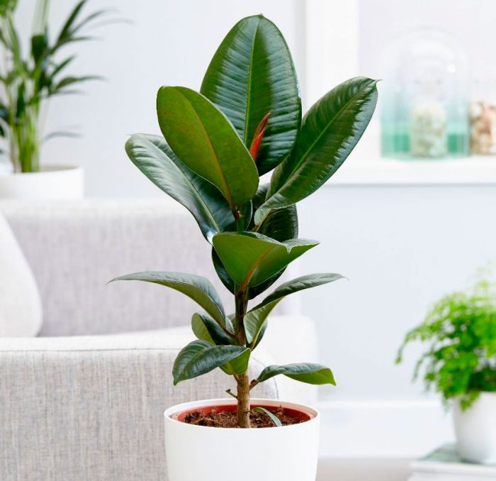 | Фикус эластичный (Ficus elastica), либо фикус каучуконосный является видом рода Фикус семейства Тутовые. Родом данное растение с индонезийских островов Ява и Суматра, а еще с северо-восточной части Индии. Такой фикус был назван каучуконосным, потому что у него имеется густой сок, в котором содержится очень много каучука, используемого для производства резины. На родине фикуса эластичного буддистами он почитается, как священное растение. Из всех видов, входящих в род фикус, этот вид, а еще его культивары пользуется наибольшей популярностью у цветоводов. Однако в двадцатом веке данное растение многие цветоводы посчитали вопиющим символом дурновкусицы, и о нем надолго забыли. Однако благодаря голландским цветоводам в последние годы это красивое и неприхотливое растение вновь стало популярным. В природных условиях фикус каучуконосный в высоту может достигать около 30 м. Так же он может сильно разрастаться и в ширину, дело в том, что он имеет воздушные корни, они опускаются от веток и ствола дерева к поверхности грунта и врастают в землю. Таким образом, они снабжают фикус дополнительными питательными веществами, а также придают ему форму, которая именуется «баньян». |
| 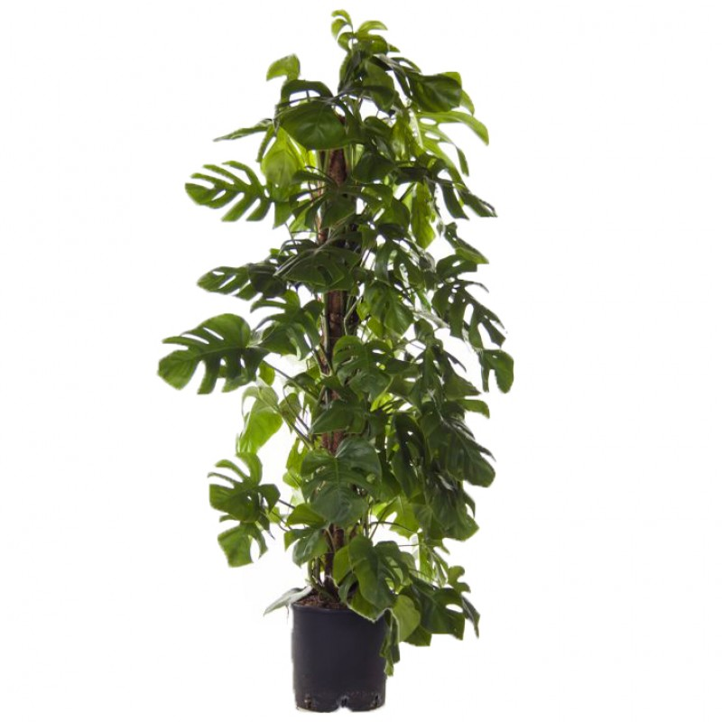 | Растение Монстера (Monstera) является представителем семейства Ароидные. Этот род объединяет примерно 50 видов. В природе их можно повстречать на территории Центральной и Южной Америки. Название рода монстера произошло от слова «monstrum», переводящееся как «чудовище», это связано с большими размерами растения и с его пугающим внешним видом. Представители данного рода ― вечнозеленые лианы и кустарники. Их толстые побеги являются лазящими, зачастую присутствуют воздушные корни. Темно-зеленые длинночерешковые крупные листовые пластины кожистые на ощупь украшают прорези и отверстия различной формы и величины. Соцветие представляет собой толстый початок цилиндрической формы, у его основания располагаются стерильные цветки, а в верхней части ― обоеполые. Монстера относится к числу наиболее популярных растений, культивируемых в домашних условиях. Научно доказано, что комнатная монстера способна ионизировать воздух в помещении, что является большим плюсом при выращивании такого цветка. |
| 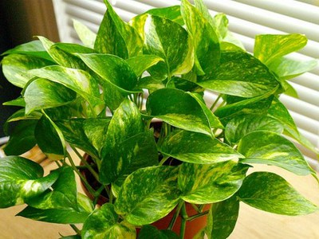 | Растение Сциндапсус (Scindapsus) является частью семейства Ароидные. Этот род объединяет примерно 25 видов, которые представлены лианами. В природных условиях они растут в тропических лесах юго-восточной части Азии. Название рода было образовано от греческого слова «skindapsos», которое переводится как «дерево, подобное плющу». Довольно часто неопытные цветоводы путают лиану сциндапсус с эпипремнумом (Epipremnum) дело в том, что эти растения относятся к одному и тому же семейству Ароидные и обладают поразительным сходством. Ниже речь пойдет именно об эпипремнуме, но чтобы было удобнее оба этих растения будут называться сциндапсусом. В природе растение сциндапсус является мощной лианой-полуэпифитом, которая обвивает древесные стволы, при этом по ним она может подняться на высоту около 15 м. У сциндапсуса как и у родственного ему растения монстеры имеется не только мочковатая подземная корневая система, но также и воздушные корни, которые помогают лиане очень высоко взбираться и расползаться на тысячи метров. |
| 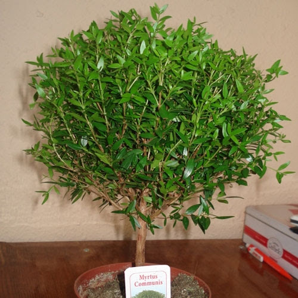 | Род Мирт (Myrtus) является представителем семейства Миртовые и объединяет примерно от 20 до 40 видов. В диких условиях мирт можно повстречать практически на всех континентах, а именно: в США в штате Флорида, в Европе у побережья Средиземного моря, в Западной Африке и в Северной Америке. Данный род представлен низкими вечнозелеными деревцами либо кустарниками. Цельные супротивнорасположенные листовые пластины на ощупь кожистые. Цветки вырастают из пазух листьев, они собраны в коротенькие кистевидные соцветия, они могут входить в состав пучков либо расти поодиночке. Такое растение пользуется у цветоводов большой популярностью, а еще его применяют в медицине и парфюмерии ― из стеблей и листвы добывают эфирное масло. Если за миртом ухаживать правильно, то он будет очень долго расти в домашних условиях. Еще интересно то, что культура отличается фитонцидным эффектом. |
| 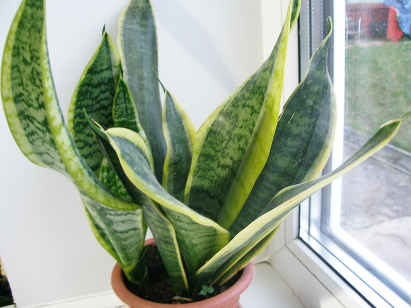 | 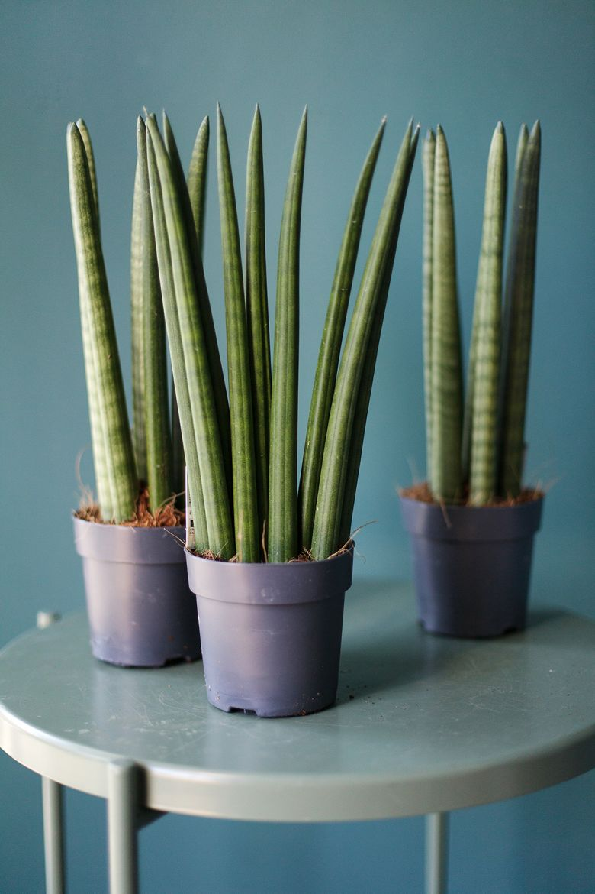 | 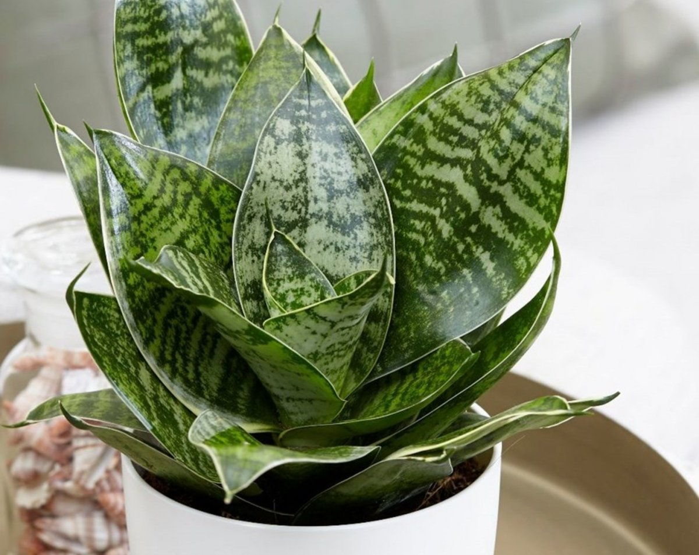 | Многолетнее вечнозеленое бесстебельное растение Сансевиерия (Sansevieria), либо сансевьера, либо сансевиера, относится к семейству Спаржевые (в части каталогах ― к семейству Агавовые). Этот род объединяет около 60 видов, которые в природных условиях можно повстречать в сухих и каменистых областях субтропических и тропических поясов Мадагаскара, Индонезии, Африки, Южной Флориды и Индии. Это растение, выращиваемое в домашних условиях, отличается своей неприхотливостью, и потому оно пользуется очень большой популярностью. В народе его еще именуют «змеиная кожа», или «щучий хвост», или «тещин язык». Сансевьера ценится тем, что ее практически невозможно погубить, даже если вы к ней не будете подходить полмесяца, то она не засохнет, и все так же будет радовать вас своей яркой листвой. Цветок так же популярен и у дизайнеров, которые не только украшают им интерьеры, но и применяют для создания цветочных композиций. |
| 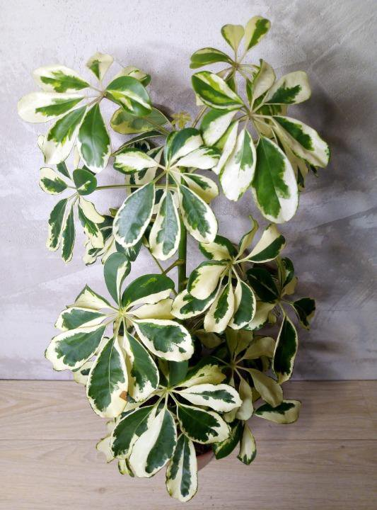 | Такое растение, как Шефлера либо Шеффлера (Schefflera) относится к семейству, именуемому аралиевые. В диких условиях его можно повстречать в тропиках в любой части земли. А чаще всего оно встречается на территории Австралии, Китая, на островах Тихого океана и в Японии. Дикорастущая шеффлера представляет собой не очень большие деревца либо кусты. Данное растение очень ценят цветоводы за красивые, эффектные листья, которые весьма схожи с человеческой ладонью, пальцы коей расставлены далеко друг от друга. Листовые пластинки размещаются на высоком черешке и являются рассеченными на 4–12 долей, которые растут из 1-й точки. В некоторых странах этот цветок именуют зонтиком гномов либо деревом-зонтиком. Вытянутые кистевидные соцветия этого растения весьма схожи с щупальцами либо антеннами. Но посмотреть на них вы сможете лишь в ботаническом саду, а все из-за того, что в комнатных условиях шеффлера не цветет. Но она способна украсить любое помещение благодаря своей изящной форме и эффектной листве. Этот цветок очень часто растят как фикус бенджамина, а точнее, его выращивают в качестве большого домашнего растения-солитера, формируя его в виде кустика имеющего достаточно большой размер либо деревца. |
| 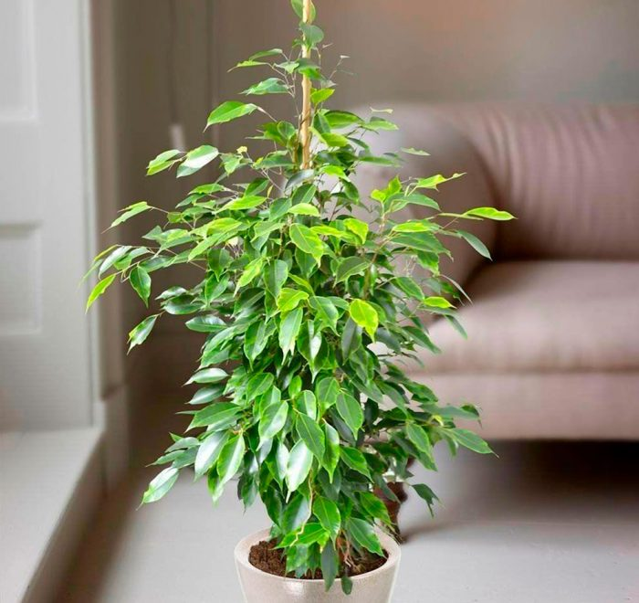 | Мелколистный кустарник Фикус Бенджамина (Ficus Benjamina) является представителем семейства Тутовые. Он пользуется большой популярностью среди цветоводов. При этом свое название растение получило в честь Джексона Бенджамина Дейдона, ботаника из Испании. Однако многие ошибочно полагают, что оно было названо в честь американского президента Бенджамина Франклина. Это растение отличается своей неприхотливостью, при этом стоит обратить внимание на то, что первые 3 месяца жизни на новом месте для него самые сложные. Если за это время фикус не заболеет или не погибнет, это значит, что в дальнейшем уход за ним будет сравнительно прост. В природе фикус Бенджамина встречается на территории Индии, Южного Китая, Филиппин, Малайзии и Северной Австралии. Величина куста зависит от условий роста и от сорта, и она может варьироваться от 50 до 300 сантиметров. В среднем в течение 1 года куст увеличивается в высоту на 20 сантиметров. Этот кустарник является многолетником, который отличается своей неприхотливостью в уходе и нетребовательностью к условиям выращивания. Его культивируют в качестве декоративно-лиственного растения. |
| 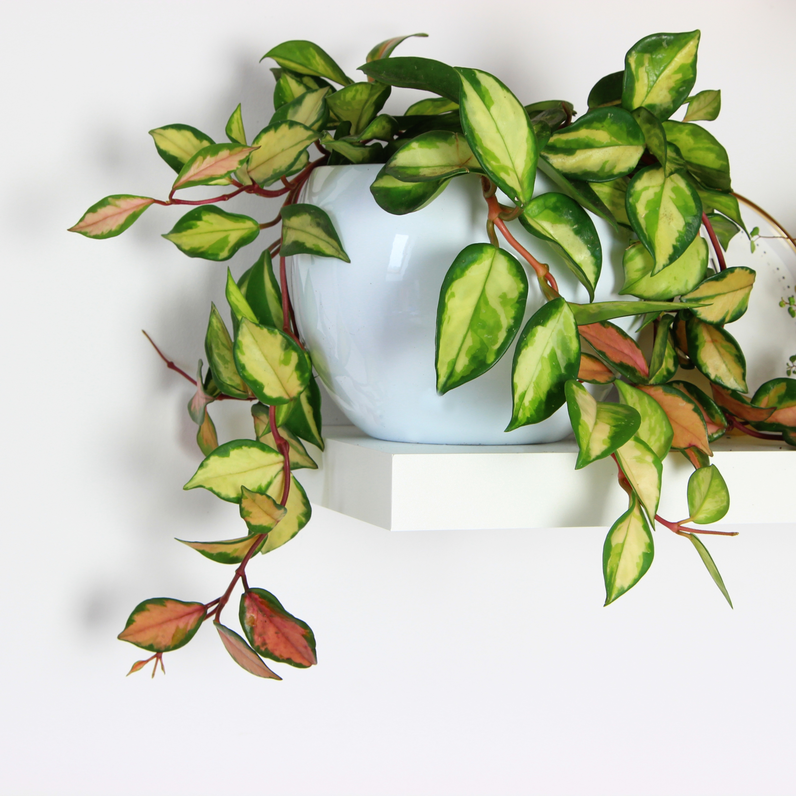 | В семейство Кутровых входит род Хойя (Hoya), в котором насчитывается до 200 видов. Распространены в Австралии (тропической части), в некоторых частях Индии и на Малайском архипелаге. Название рода было дано растению в честь Томаса Хойя. Род представлен вечнозелеными растениями со стелющимися и вьющимися побегами. Листья овальные, яйцевидной формы, кожистые, мясистые; пазушные соцветия. Венчик из пяти членов, округлый, мясистый. Цветки формируют зонтик. Коронка из пяти выпуклых, толстых, рассеченных столбиков. Комнатная хойа – весьма необычное декоративное растение. Они растут как в теплых, так и умеренных и прохладных комнатах – сухой воздух переносится ими неплохо. Для хорошего роста хойе необходимо давать опору. |
| 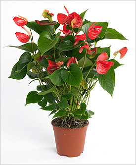 | Растение Антуриум (Anthurium) является частью семейства Ароидных, причем большая часть видов данного рода ― это эпифитные растения. Еще среди антуриумов встречаются лианы, травянистые растения и полуэпифиты. В природных условиях такое растение преимущественно встречается на территории Южной и Северной Америки в субтропиках и тропиках. Название антуриума состоит из двух греческих слов «anthos», что означает «цветок», и «oura» ― «хвост». Это связано со строением цветка дело в том, что он представлен початком с листом-покрывалом. Окрашен цветок может быть в различные оттенки, например: в белый, синий, красный и другие. Кожистые листовые пластины могут быть рассеченными или целыми, с узором или одноцветными, крупные или небольшие (в зависимости от вида и сорта). В семействе Ароидные антуриум входит в число наиболее популярных в культуре растений. При этом его культивируют и в домашних условиях, и в открытом грунте, а еще растят специально для срезки. В результате работы селекционеров на свет появилось более сотни различных гибридов этого растения. В комнатных условиях антуриум культивируют и как декоративно-лиственное, и как красивоцветущее растение. |
| 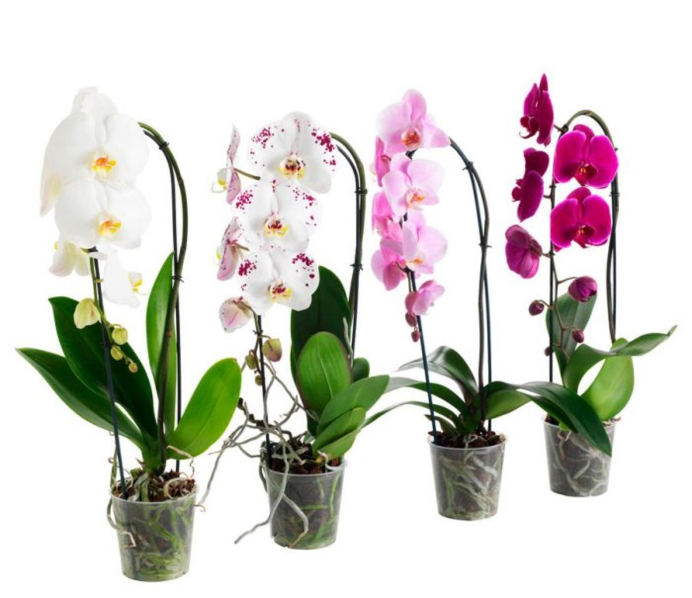 | Орхидея фалинопсис (Phalaenopsis) является травянистым растением трибы Вандовые семейства Орхидные. Ее родина ― влажные леса Юго-Восточной Азии, Австралии и Филиппин. Большинство таких орхидей являются эпифитами, так как они растут на деревьях, однако в некоторых случаях их можно повстречать, растущими на камнях. Георг Румф, являющийся немецким натуралистом, нашел такое растение первым, находясь на одном из Молуккских островов. Назвал данную орхидею фаленопсисом Карл Блюм, директор Лейденского ботанического сада, однажды он рассматривал это растение в бинокль и решил, что его цветки являются самыми настоящими бабочками, а фаленопсис как раз означает «подобным мотыльку». На сегодняшний день этот цветок иногда именуют «орхидеями-бабочками». Данный род объединяет примерно 70 видов. Такое растение пользуется очень большой популярностью у цветоводов, потому что оно отличается своей изысканностью и эффектностью, а еще это связано с тем, что за данной орхидеей сравнительно просто ухаживать. |
| 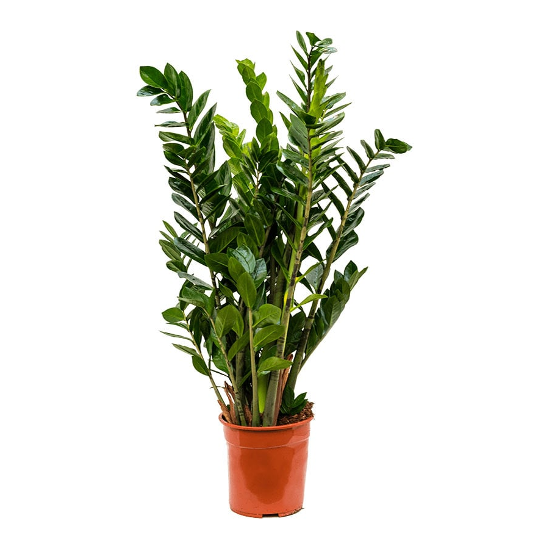 | Растение Замиокулькас (Zamioculcas), которое еще именуют долларовым деревом, является представителем семейства Ароидные, в природе его можно повстречать в тропических широтах Африки. По информации, взятой из различных источников, этот род объединяет от 1 до 4 видов. Растение было названо замиокулькасом, потому что его листва очень похожа на листья замии, растущей на американском континенте. Замиокулькас представляет собой низкое травянистое растение. Корневище у него клубневидное, а корни толстые и мясистые. Толстый и сочный рахис очень нужен цветку, так как в нем он запасает воду. Кожистые на ощупь перышки довольно плотные. В длину листовая пластина может достигать около 100 см. Во время длительного засушливого периода растение скидывает листочки с верхней части листовой пластины, благодаря этому происходит уменьшение испарения влаги, а снизу черешок нужен для сохранения жидкости для куста. Еще скопление влаги происходит и в подземном клубне. Хорошо разросшийся куст может начать цвести и при выращивании в домашних условиях. Коротенький толстый цветонос появляется из основания листьев, он несет початок-соцветие бледно-кремового окраса. |